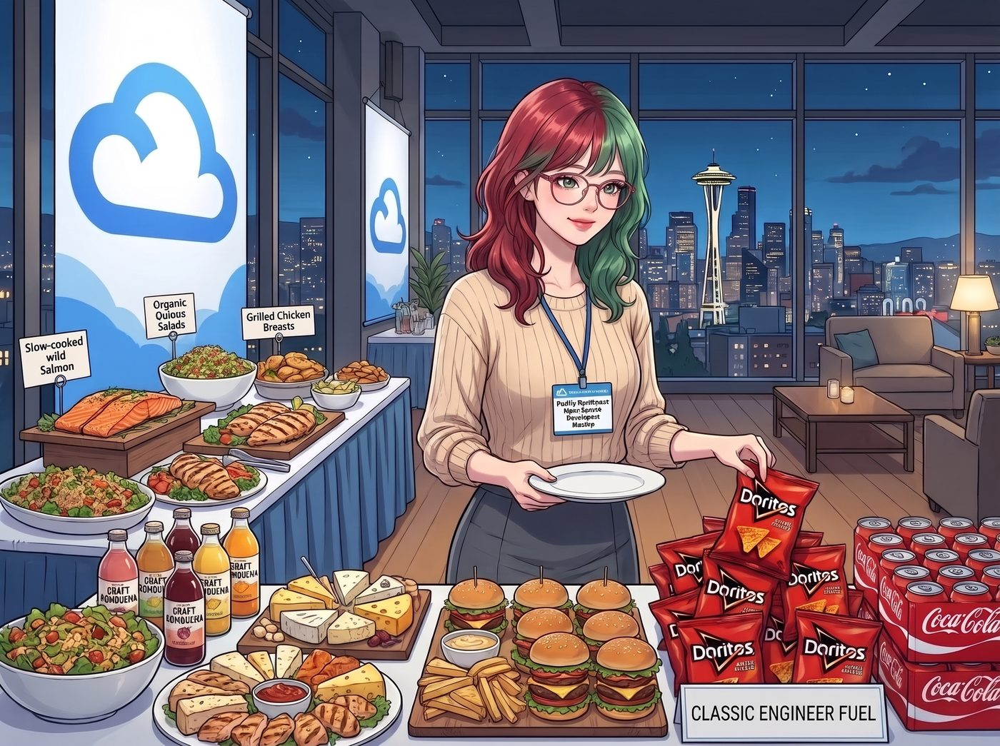

創意搭配

同一個週五晚上，西雅圖市中心。
某家市值破兆的雲端巨頭，大樓頂層的交誼廳。
名義上，這是一場「太平洋西北開源軟體開發者聚會」。但只要看看四周那些印著巨大 Logo 的立牌，就知道今晚真正買單的是誰。為了招攬那些在 GitHub 上星星很多的野生工程師，贊助商直接包下了整層樓的餐飲。
十公尺長的自助餐檯上，擺滿了科技公司標準配備的健康餐點：低溫慢煮的野生鮭魚，有機藜麥沙拉，現切的炭烤雞胸，各種口味的精釀康普茶，一大盤起司拼盤，還有一個專門做漢堡的小吧台。
餐檯最邊緣，有一塊被貼上「經典工程師燃料」標籤的區域。那裡堆著一整座小山似的獨立包裝起司味多力多滋，和幾箱冰過的可樂。
Lily 胸前掛著名牌，手裡拿著一個白色瓷盤，站在那座小山前面。
旁邊那些穿連帽衫的工程師，正單手抓起兩包，一邊嚼得咔嚓作響，一邊跟身邊的人爭論 Rust 跟 C++ 的記憶體安全。
Lily 沒有馬上打開袋子。
她拿起一包，翻到背面，推了推眼鏡。
一、文件
背面印著一張照片：一片多力多滋上，疊著一塊煙燻烤雞胸、幾顆對半切的櫻桃番茄、一小塊酪梨，淋著一道粉橘色的醬，最上面還插了一小枝蒔蘿。
照片下面一行小字：
建議搭配：煙燻烤雞胸、櫻桃番茄、酪梨、千島醬。
再下面，一行更小的字：
圖案僅供創意搭配，產品以實物為準。
Lily 盯著那兩行字看了很久。
然後她又把袋子翻到營養標示那一面。
每份約 28 公克（約 11 片）。
她把那包多力多滋放在瓷盤的左上角，端著盤子，轉身走向了自助餐檯。
二、調用
煙燻烤雞胸，在餐檯中段。一個戴高帽的廚師正在切片，Lily 請他切了薄薄的三片，問清楚了是用蘋果木燻的。
櫻桃番茄，在沙拉吧。她用夾子挑了六顆大小差不多的，拿到旁邊的備料檯，借了一把小刀，一顆一顆對半切開。
酪梨，在「加州輕食區」，一碗切好的酪梨丁旁邊擺著羽衣甘藍。她只夾酪梨。
到這裡為止，一切順利。
然後她在整條十公尺的餐檯上，從頭走到尾，又從尾走回頭。
沒有千島醬。
這裡有松露蛋黃醬，有手打青醬，有韓式辣醬，有三種不同產地的橄欖油。但沒有任何一個碗裡，裝著那種粉橘色的、上一次大規模出現大概是在八〇年代牛排館沙拉吧的醬料。
Lily 在餐檯盡頭站了五秒。
然後她走向了漢堡吧台。
番茄醬。美乃滋。一小碟切碎的甜酸黃瓜醬。
她拿了一個乾淨的小碟子，先擠了兩份美乃滋，再加一份番茄醬，最後舀了半匙酸黃瓜醬，用一根乾淨的咖啡攪拌棒，順著同一個方向攪了十二圈。
碟子裡的東西，慢慢變成了照片裡那種粉橘色。
三、十一片
她端著盤子，在落地窗邊找了一張沒人的高腳桌。
盤子上，五個小碟子排成一列：煙燻雞胸、櫻桃番茄、酪梨、自製千島醬，和一小枝她從鮭魚旁邊借來的蒔蘿。
她從帆布包裡拿出一把迷你瑞士刀，用上面的小剪刀，沿著袋子頂端的封口線，剪出一道平整得可以拿游標卡尺去量的直線開口。
然後她把袋子倒過來，一片一片地，數出了十一片。
剩下的，她把袋口折好，放回包裡。
「請問……我可以坐這裡嗎？」
一個端著一整盤披薩、戴著厚重黑框眼鏡的年輕開發者站在桌邊。
Lily 點了點頭，把桌上那排小碟子往自己這邊挪了一點，空出半張桌子。
他放下盤子，視線立刻被桌上那排小碟子吸走了。
Lily 拿起第一片多力多滋，在尖端抹上薄薄一層千島醬，疊上一片煙燻雞胸，放上兩個半顆櫻桃番茄和一小塊酪梨，最後，把那一小撮蒔蘿插在最上面。
她把它舉起來，和包裝背面的那張照片並排，比對了一下。
然後放進嘴裡。
煙燻的鹹香壓住了起司粉那種粗暴的鹹，番茄的酸把油膩切開，酪梨讓口感變得綿，那碟自製的千島醬，把所有東西黏在了一起。
Lily 慢慢嚼完，點了點頭。
「呃……」旁邊的年輕人手裡的披薩停在半空中，「妳這是在吃多力多滋，還是在做某種我看不懂的資料視覺化？」
Lily 拿起餐巾，擦了擦根本沒沾到任何粉末的指尖，把那包多力多滋翻過來，推到他面前，指了指背面那行字。
他湊過去看。
「『建議搭配』……」他唸出來，「等一下，這上面真的有寫？我吃這個吃了十五年，從來沒翻過背面。」
「大部分人都沒有。」
「可是千島醬——」他四處張望，「這裡哪有千島醬？」
「沒有。」Lily 說，「所以我用漢堡吧台的材料自己做了一份。」
年輕人看著那碟粉橘色的醬，又看了看包裝背面最下面那行更小的字。
「『圖案僅供創意搭配，產品以實物為準』……」他抬起頭，「這不就是說，他們自己也沒指望有人真的照做嗎？」
Lily 想了想。
「文件寫了，就有人應該照著做。」她說，「就算寫文件的人自己都沒想到。」
她拿起第二片。
年輕人看著她，沉默了幾秒，然後低頭看了看自己盤子裡那四片已經有點涼的披薩。
「那個……」他小聲說，「漢堡吧台在哪裡？」
兩個小時後，聚會散場。
Lily 走出大樓的時候，帆布包裡多了兩樣東西：一包還剩二十多片、袋口折得整整齊齊的多力多滋，和一張那個年輕人硬塞給她的名片。名片背面，他用原子筆寫了一行字：
「如果妳哪天想來我們專案寫文件，拜託。我們的 README 已經三年沒人更新了。」
Lily 把名片收進筆記本，夾在最後一頁。
回營地的最後一班渡輪上，她把那包多力多滋拿出來，看了一會兒，又放回去了。
今天的份量，已經吃完了。